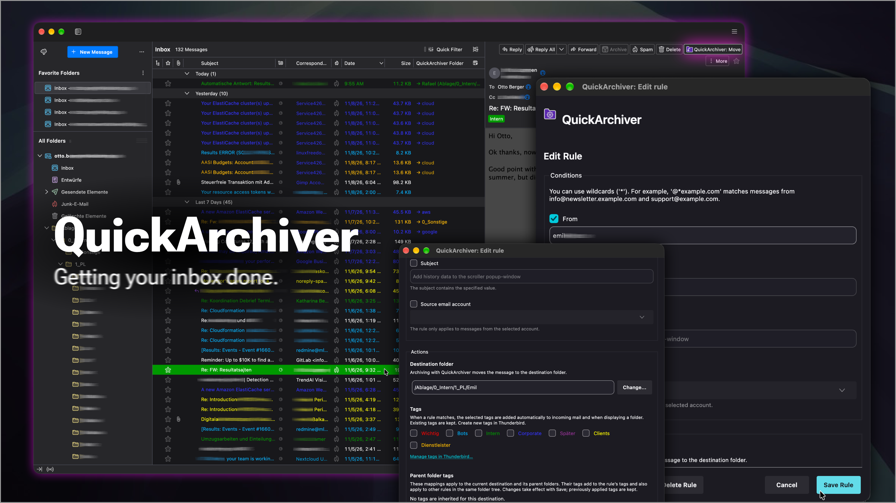
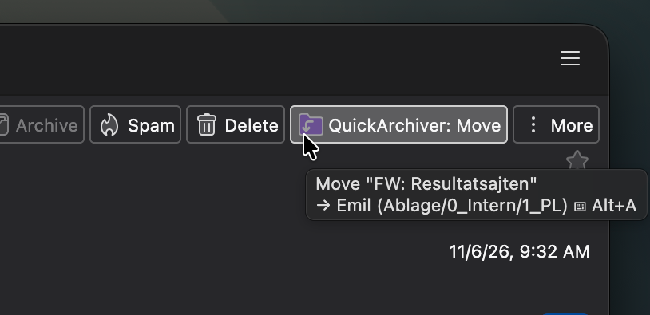
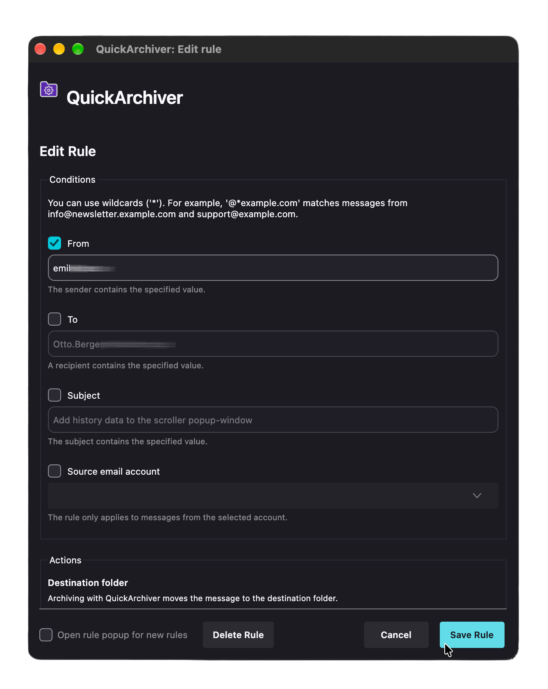
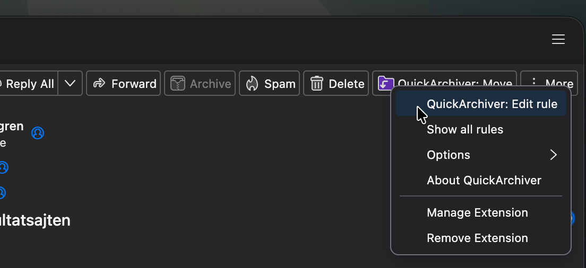
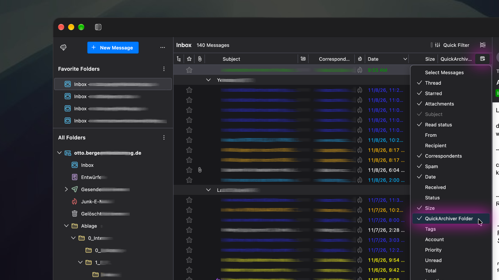
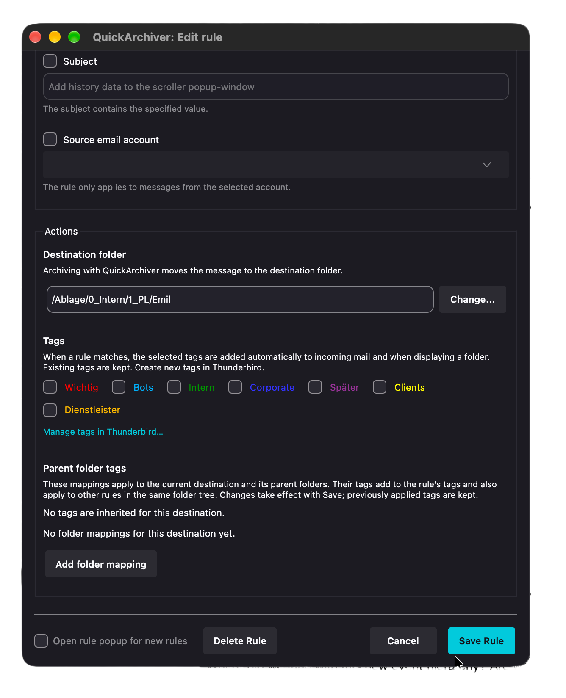
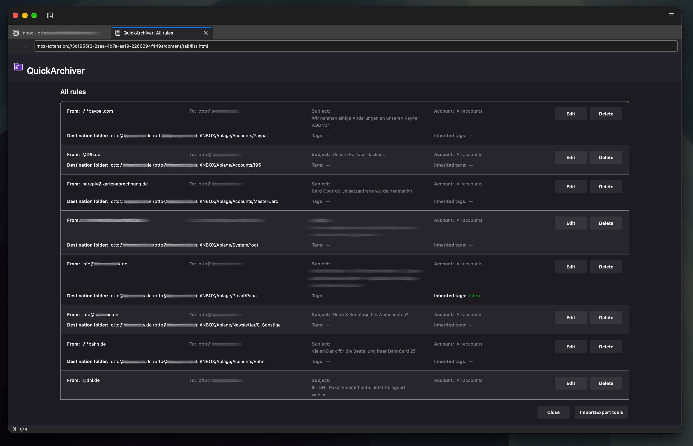

QuickArchiver vous aide à garder votre boîte de réception bien rangée. Il apprend où classer vos messages et vous permet ensuite d’archiver les messages correspondants d’un clic ou à l’aide d’un raccourci clavier.
NOUVEAU: QuickArchiver attribue aussi automatiquement des étiquettes aux messages selon vos règles. Les catégories restent ainsi visibles avant même de déplacer les messages hors de la boîte de réception.
QuickArchiver accompagne votre gestion des e-mails selon la méthode Getting Things Done (GTD). Vous pouvez utiliser votre boîte de réception comme point de collecte des nouvelles informations et décider, en consultant chaque message, de la suite à lui donner : répondre immédiatement, noter une tâche, attendre une réponse ou conserver le message comme référence. Une fois l’action nécessaire effectuée ou consignée dans un endroit fiable, QuickArchiver vous aide à classer le message. Par exemple, déplacez la première facture d’un expéditeur vers votre dossier de factures ; les messages correspondants suivants pourront y être rangés d’un clic ou à l’aide d’un raccourci clavier. Vous repérez ainsi plus facilement les messages qui demandent encore votre attention. Vous décidez quand un message est prêt à être classé et continuez à gérer vos tâches et vos rappels dans votre système habituel.
Premiers pas
1. Créer une règle en déplaçant un message
Déplacez un message vers son dossier de destination comme d’habitude. Si aucune règle ne correspond, QuickArchiver en crée automatiquement une à partir de l’adresse de l’expéditeur et mémorise le dossier de destination.

2. Archiver les messages correspondants
Lorsqu’un message correspond à une règle, cliquez sur le bouton QuickArchiver ou appuyez sur Alt+A. QuickArchiver le déplace directement vers le dossier mémorisé. Si vous sélectionnez plusieurs messages, Alt+A déplace chacun de ceux pour lesquels une règle existe.
Astuce : afficher le dossier de destination dans la liste des messages
Activez la colonne Dossier QuickArchiver
dans la vue en tableau de Thunderbird pour voir
la destination avant de déplacer un message. Vous trouverez les détails ci-dessous.
En détail

Éditeur et paramètres des règles
L’éditeur vous permet de choisir les conditions actives. Une règle peut porter sur l’expéditeur, le destinataire, l’objet et, éventuellement, le compte source. Toutes les conditions activées doivent être satisfaites.
Vous pouvez également choisir la destination à l’aide d’un sélecteur de dossiers avec recherche et filtrer la liste par compte.
Les conditions textuelles ne distinguent pas les majuscules des minuscules et acceptent
* comme caractère générique. Par exemple, @*example.com correspond
à info@newsletter.example.com ainsi qu’à support@example.com.
Sans caractère générique explicite, une valeur correspond aussi lorsqu’elle figure n’importe
où dans le champ concerné.
Activez Ouvrir l’éditeur pour les nouvelles règles
pour vérifier immédiatement chaque
règle créée automatiquement. Cette option autorise aussi les destinations spéciales comme la
corbeille. Sinon, la boîte de réception et la corbeille sont exclues de la création automatique
de règles.

Menu contextuel
Faites un clic droit sur le bouton QuickArchiver pour modifier la règle actuelle, afficher toutes les règles, choisir d’ouvrir l’éditeur pour les nouvelles règles ou consulter cette page d’aide. Dans la liste des messages, le menu propose aussi de déplacer le message lorsqu’une règle correspondante existe.
Afficher la colonne Dossier QuickArchiver

Dans la vue en tableau de Thunderbird, faites un clic droit sur un en-tête de colonne et
sélectionnez Dossier QuickArchiver
. La colonne affiche le dossier de destination des
règles correspondantes. Si un message s’y trouve déjà, elle affiche ✓ Dossier actuel
.
Cette colonne n’est pas disponible dans la vue en fiches.
Ouvrez Gestionnaire de modules complémentaires → QuickArchiver → Préférences
pour
configurer la colonne. Afficher le chemin dans la colonne des dossiers
est activé par
défaut. Désactivez cette option pour afficher uniquement le nom, par exemple
→ Factures
au lieu de → Factures (Archives)
.
La sous-option Masquer le chemin pour les messages étiquetés
est désactivée par défaut.
Activez-la pour masquer le chemin des messages possédant déjà des étiquettes Thunderbird,
y compris celles ajoutées manuellement. Les messages sans étiquette conservent le chemin.
Ce sont les étiquettes du message qui comptent, et non celles configurées dans sa règle.
Si l’option principale est désactivée, seul le nom apparaît quelles que soient les étiquettes,
et la sous-option est désactivée.
Les changements sont immédiats dans la colonne. L’infobulle du bouton conserve le chemin détaillé et l’indication du dossier actuel reste inchangée.
NOUVEAU: Étiqueter automatiquement les messages

QuickArchiver peut ajouter des étiquettes Thunderbird aux messages correspondants dès leur arrivée dans la boîte de réception. Les catégories comme Clients, Factures ou les projets restent visibles avant l’archivage. Cette fonction est facultative : les règles sans étiquettes propres ou héritées fonctionnent comme auparavant. Vous décidez toujours quand déplacer les messages avec QuickArchiver.
Attribuer des étiquettes à une règle
- Ouvrez une règle depuis le menu QuickArchiver ou via
Afficher toutes les règles
etModifier
. - Choisissez les messages concernés sous
Conditions
, puis la destination sousActions
. - Sous
Étiquettes
, sélectionnez une ou plusieurs étiquettes Thunderbird existantes. Leurs noms apparaissent dans leurs couleurs. - Cliquez sur
Enregistrer la règle
.
Par exemple, une règle pour un fournisseur peut viser Factures/Fournisseur A et ajouter l’étiquette Factures. Les nouveaux messages correspondants la reçoivent dans la boîte de réception. Ils ne sont déplacés qu’au moment de leur archivage.
Si plusieurs règles correspondent, QuickArchiver utilise la première de la liste enregistrée. Ses étiquettes se cumulent avec celles des dossiers applicables ; les étiquettes de toutes les règles correspondantes ne sont pas réunies.
Hériter des étiquettes des dossiers parents
Sous Actions → Étiquettes des dossiers parents
dans le dialogue de règle, choisissez Ajouter une association de dossier
et attribuez des étiquettes à la destination ou à l’un de ses parents. L’association s’applique au dossier et à tous ses sous-dossiers du même compte. Enregistrer la règle
enregistre la règle et les associations ; Annuler
abandonne les modifications non enregistrées.
Le dialogue montre uniquement les associations pertinentes pour la destination actuelle. Changer de destination actualise la vue ; les autres associations restent enregistrées. Une association concerne toutes les règles visant cette arborescence, y compris les règles créées plus tard.
Par exemple, une règle vise Clients/Entreprise Exemple/Projet A :
Clientstransmet l’étiquette Clients.Clients/Entreprise Exempletransmet l’étiquette Entreprise Exemple.- La règle ajoute elle-même l’étiquette Factures.
Le message reçoit les trois étiquettes. Plusieurs niveaux se cumulent ; les doublons sont appliqués une seule fois. L’aperçu indique les étiquettes héritées et leurs dossiers sources.
L’héritage suit la destination de la règle correspondante, pas le dossier actuel du message. Un dossier homonyme d’un autre compte ou un dossier voisin nommé Clients-anciens n’hérite pas de Clients. Une association de dossier ne remplace pas une règle de message correspondante.
Quand les étiquettes sont-elles appliquées ?
- À l’arrivée des nouveaux messages, sans les ouvrir ni les archiver.
- À l’ouverture d’un dossier, pour les messages correspondants qu’il contient déjà.
- À l’initialisation de QuickArchiver, pour les dossiers ouverts.
- Après l’enregistrement des règles ou des associations, pour les messages correspondants des dossiers ouverts.
- À l’affichage d’un message ou lors de son archivage avec QuickArchiver.
Les autres dossiers sont vérifiés à leur ouverture. Enregistrer ne lance pas une analyse de toute la messagerie. Le traitement des grands dossiers peut être progressif. La liste des étiquettes Thunderbird est chargée uniquement si nécessaire, une fois par traitement.
Gérer les étiquettes et comprendre les modifications
Utilisez Gérer les étiquettes dans Thunderbird…
pour ouvrir les paramètres d’étiquettes de Thunderbird. Vous pouvez y créer, renommer, recolorer ou supprimer des étiquettes. Au retour, le dialogue actualise ses choix tout en conservant vos réglages non enregistrés.
Les étiquettes déjà présentes sont conservées ; QuickArchiver ajoute seulement celles qui manquent. Renommer ou recolorer une étiquette existante conserve son association. Les références supprimées peuvent rester visibles sous leur clé interne dans l’éditeur ; elles sont ignorées lors de l’étiquetage.
Retirer une sélection ou supprimer une association de dossier ne supprime pas les étiquettes déjà appliquées aux messages. Cela arrête les ajouts futurs provenant de cette association. Une autre association peut toujours demander la même étiquette. Si vous la retirez manuellement d’un message, QuickArchiver peut l’ajouter à nouveau lors de la prochaine vérification.
Vue d’ensemble et sauvegardes
Afficher toutes les règles
présente les conditions de chaque règle, puis sa destination et ses étiquettes propres et héritées. Les champs s’adaptent à la largeur de la fenêtre. Survolez une étiquette héritée pour voir ses dossiers sources. Les associations de dossiers figurent en dessous et peuvent y être supprimées après confirmation. Pour modifier leurs étiquettes, ouvrez une règle visant l’arborescence concernée.
Les exports JSON incluent les étiquettes des règles et les associations de dossiers. Importer ces nouvelles sauvegardes remplace les règles et les associations. Les anciennes sauvegardes contenant uniquement une liste de règles restent acceptées et conservent les associations existantes. Exportez vos réglages actuels avant d’importer si vous souhaitez les conserver.
Les sauvegardes contiennent les références des étiquettes, pas leurs définitions Thunderbird avec noms et couleurs. L’importation ne crée pas les étiquettes manquantes. Pour un transfert vers un autre profil, les étiquettes, comptes et dossiers référencés doivent aussi être disponibles.
Paramètres et gestion des règles
Toutes les règles
Sélectionnez Afficher toutes les règles
dans le menu contextuel ou dans les paramètres de
QuickArchiver pour consulter, modifier ou supprimer les règles enregistrées.

Importation et exportation
Ouvrez les outils sous la liste des règles pour exporter toutes les règles sous forme de sauvegarde JSON ou importer une sauvegarde précédente. L’importation remplace toutes les règles existantes : exportez-les d’abord si vous souhaitez les conserver.

À propos
QuickArchiver est un projet open source d’Otto Berger (quickarchiver@bergercity.de), soutenu par www.bergerdata.com.
Projet GitHub : https://github.com/obrgr/quickarchiver
Un grand merci à
- developer.thunderbird.net
- thunderbird.topicbox.com/groups/addons
- John Bieling, pour son travail sur les exemples
- Philippe Lieser, pour la logique de traduction
- Toutes les autres personnes qui contribuent à l’API WebExtension
Notes de version
Version 2.8.0
- Étiquetage automatique des messages correspondants à leur arrivée et à leur consultation
- Cumul des étiquettes des règles, des destinations et des dossiers parents, avec aperçu et sauvegarde
- Dialogue organisé en Conditions et Actions et règles affichées sur deux lignes avec couleurs des étiquettes
- Accès direct aux paramètres d’étiquettes de Thunderbird
- Réutilisation de la liste des étiquettes au cours de chaque traitement ou archivage par lot
Version 2.7.4
- Compatibilité déclarée avec Thunderbird étendue jusqu’à la version 158
Version 2.7.3
- Compatibilité déclarée avec Thunderbird étendue jusqu’à la version 157
Version 2.7.2
- Ajout de la traduction française de l’interface et de la documentation intégrée
- Traduction de la description de l’extension et de la commande clavier
Version 2.7.1
- Compatibilité déclarée avec Thunderbird étendue jusqu’à la version 156
Version 2.7.0
- Affichage du raccourci clavier configuré dans l’infobulle au lieu d’Alt+A fixe ; mise à jour lors d’un changement et masquage de l’indication si aucun raccourci n’est défini
- Présentation des dossiers de destination harmonisée dans l’infobulle et la colonne
- Masquage du premier niveau IMAP INBOX dans les chemins parents affichés, sans modifier les destinations enregistrées
- Affichage cohérent des dossiers parents, des noms de comptes et des indicateurs de dossier actuel
Version 2.6.1
- Gestion des messages internes améliorée pour un fonctionnement fiable avec Manifest V3
- Ajout d’une icône de l’extension au manifeste
Version 2.6
- Ajout d’un sélecteur de dossiers avec recherche et filtrage par compte dans l’éditeur de règles
- Ajout des informations de compte dans la liste des règles
- Amélioration de l’éditeur, du sélecteur de dossiers, de la liste des règles et des outils d’importation et d’exportation
Version 2.5
- Possibilité de restreindre une règle aux messages d’un compte source sélectionné
- Amélioration de la correspondance des règles et du traitement des messages déplacés
Version 2.4
- Ajout d’une fenêtre facultative pour vérifier les nouvelles règles
- Amélioration du nettoyage des règles enregistrées
Version 2.3
Améliorations de compatibilité avec les versions récentes de Thunderbird.
- Ajout de la colonne Dossier QuickArchiver dans la vue en tableau de la liste des messages
- Amélioration de la compatibilité avec les API WebExtension actuelles
- Ajout d’une option pour ouvrir l’éditeur lors de la création de règles
Version 2.2
Nouveautés :
- Ajout d’une page de paramètres QuickArchiver (voir le gestionnaire de modules complémentaires → QuickArchiver)
- Prise en charge des caractères génériques (« * »). Par exemple, « @*example.com » correspond aux messages de info@newsletter.example.com et de support@example.com.
Version 2.1
Attention : avec les paramètres par défaut de Thunderbird, les règles QuickArchiver sont perdues lors de la désinstallation de l’extension. Les outils d’importation et d’exportation permettent de les sauvegarder au préalable. En théorie, vous pouvez transférer les règles vers une autre installation de Thunderbird si la structure des comptes et des dossiers est identique (non testé).
Nouveautés :
- Importation et exportation de toutes les règles au format JSON
- Amélioration de l’apparence et de l’ergonomie de la liste des règles
- Correction de l’initialisation au premier démarrage
Version 2.0
Thunderbird 115 (Supernova) a nécessité des modifications importantes de QuickArchiver. L’ancienne branche QuickArchiver 0.2 ne fonctionne plus et ne sera plus développée. Les mises à jour précédentes de Thunderbird avaient déjà montré que son maintien demanderait un effort considérable et des compromis indésirables.
Bonne nouvelle : une nouvelle version existe, et vous venez de l’installer !
Nouveautés :
- Réécriture complète à partir de l’API WebExtension actuelle de Mozilla pour faciliter les futures mises à jour
- Enregistrement des règles dans le stockage WebExtension
- Possibilité d’une disponibilité des règles sur plusieurs appareils à l’avenir
- Nouvelle interface avec bouton de barre d’outils, menu et raccourcis clavier
- Amélioration de l’éditeur et de la liste de toutes les règles
- Création toujours automatique des règles lors du déplacement des messages
Quelques limitations subsistent :
- Toutes les règles doivent être recréées. La migration de l’ancienne base de règles vers la nouvelle structure demanderait beaucoup de temps.
- La colonne Dossier QuickArchiver n’est pas disponible dans la vue en fiches de Thunderbird. Dans la vue en tableau, vous pouvez l’activer depuis le sélecteur de colonnes. Les messages peuvent aussi être déplacés avec le bouton de la barre d’outils et les raccourcis clavier.